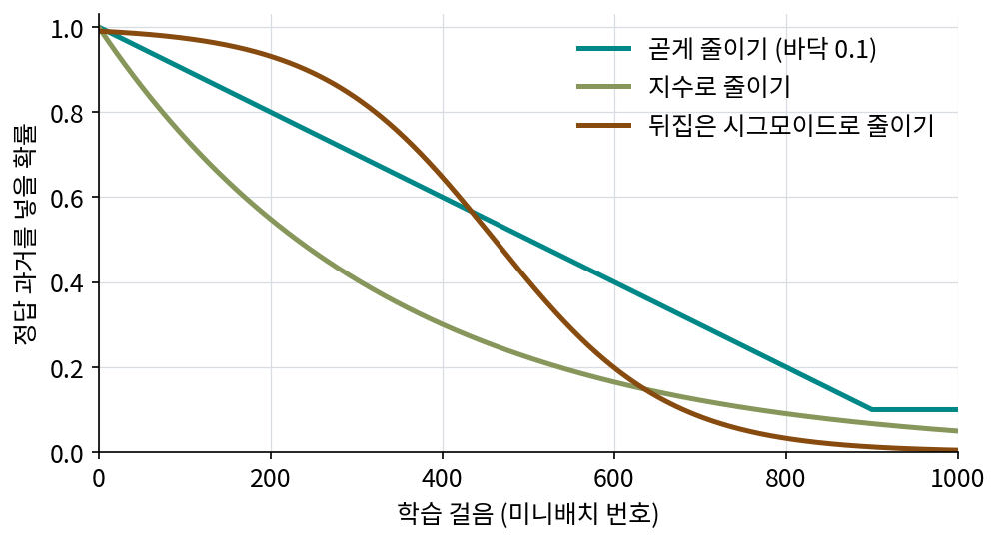

스케줄드 샘플링: 연습의 과거에 자기 것을 섞는다
노출 편향의 뿌리는 학습 때의 과거와 생성 때의 과거가 다르다는 데 있었다. 그렇다면 학습 때도 모델이 만든 과거를 넣어 주면 되지 않을까? 말은 쉽지만 두 가지가 걸린다. 학습 초반의 모델이 만든 과거는 엉망이라 그 위에서는 배울 것이 없다. 또 모델의 과거를 넣으려면 학습 중에 모델을 직접 돌려 과거를 만들어야 한다.
역사: 세 갈래의 답과 한 번의 실패
노출 편향을 정면으로 겨냥한 답은 2015년부터 이듬해까지 셋이 나왔다. 구글의 벤지오(Samy Bengio)와 동료들은 앞 낱말을 넣을 때마다 동전을 던져, 정답 낱말을 넣을지 모델이 만든 낱말을 넣을지 정했다. 정답을 넣을 확률은 학습 초반에는 1에 가깝게, 후반으로 갈수록 작게 줄였다. 처음에는 정답 과거로 배우다가 점점 실전의 조건으로 옮겨 가는 교육 과정이다. 그들은 확률을 줄이는 방법으로 곧게, 지수로, 뒤집은 시그모이드 꼴로 줄이는 셋을 제안했다.

시행착오도 함께 적었다. 학습 처음부터 늘 모델이 만든 과거만 넣은 모델은 그림 설명 과제에서 BLEU-4(만든 문장과 정답 문장이 네 낱말 묶음을 얼마나 함께 갖는지 세는 점수)가 28.8에서 11.2로 무너졌다. 동전을 문장마다 한 번만 던져 문장 전체를 정답 과거나 모델 과거 하나로 채운 것도 그만큼 나빴다. 낱말마다 동전을 던지고 확률을 서서히 줄였을 때 30.6으로 올랐다. 이 방법을 쓴 모델은 MSCOCO 2015 그림 설명 대회에서 1위를 했다.
같은 해 란차토와 동료들은 다른 길을 갔다. 학습 때 모델이 만든 문장 전체에 점수를 매기고, 그 점수를 높이는 쪽으로 학습했다(REINFORCE, 점수가 높았던 출력의 확률을 키우는 강화학습의 방법). 입력만이 아니라 목표까지 바꾼 것이다. 2016년 램(Alex Lamb)과 동료들의 프로페서 포싱(professor forcing)은 판별기(둘 가운데 어느 쪽에서 왔는지 맞히는 신경망)를 두어, 정답 과거로 돌 때와 자기 과거로 돌 때 신경망 속의 움직임이 구별되지 않게 했다.
동전을 낱말마다 던지기
벤지오와 동료들의 실패에서 무엇을 읽을 수 있을까? 정답을 넣을 확률이 0.75인 때, 과거 20프레임을 채운다고 해 보자. 프레임마다 동전을 던지면 평균 다섯 프레임이 모델의 것이고, 20프레임이 모두 정답일 확률은 0.75²⁰ ≈ 0.3%다. 거의 모든 학습 예제에 모델의 프레임이 몇 장씩 섞인다. 한 번 던져 통째로 정하면 예제의 75%는 정답 과거만, 25%는 모델 과거만 받는다. 앞쪽은 티처 포싱과 같고, 뒤쪽은 학습 초반이면 엉망인 과거 위에서 배우는 셈이다. 정답 과거 사이사이에 자기 것이 조금씩 섞인 입력, 곧 생성 때 처음 몇 걸음의 모습을 학습이 계속 보여 주는 것이 핵심이었다.
이렇게 학습 때 넣는 과거를 정답과 모델의 출력 가운데 확률로 골라 섞고, 모델의 출력을 넣는 비율을 학습이 진행될수록 늘려 가는 방법을 스케줄드 샘플링 (일정에 따라 자기 출력 섞기 / scheduled sampling)이라 한다. 「스케줄」은 섞는 비율을 정한 시간표, 「샘플링」은 모델에서 출력을 뽑아 넣는다는 뜻이다.
ML에서: 영상에서는 섞을 과거를 만드는 값이 크다
언어모델에서 모델의 앞 낱말 하나를 얻는 데는 신경망을 한 번 부르면 된다. 디퓨전으로 프레임을 만드는 영상 모델은 다르다. 모델이 만든 과거 프레임 한 장을 얻으려면 잡음에서 시작해 신경망을 여러 번 불러 걸어 내려와야 한다. 학습 예제마다 그만큼을 더 들이기는 어렵다. 그래서 영상 쪽은 두 갈래로 갔다. 하나는 모델이 만든 과거 대신 값싸게 만들 수 있는 「흐려진 과거」로 학습하는 길이고, 다른 하나는 몇 걸음에 프레임을 만드는 빠른 모델을 먼저 얻어 학습 중에도 실제로 굴리는 길이다. 앞의 것이 디퓨전 포싱, 뒤의 것이 셀프 포싱이다.
문제 6. 틀린 풀이 뒤에 붙인 모범답안
연쇄 문제 시험이다. 4번의 답을 2배 하면 5번의 답이다. 4번의 정답은 12인데 학생은 15라고 썼고, 그 15를 써서 5번을 풀었다. 채점하는 조교는 4번은 학생 답을 그대로 두고, 5번만 정답지(24)와 견준다. (가) 학생의 풀이로 보면 5번의 답은 얼마가 자연스러운가? (나) 조교가 5번에 「24가 답이다」라고 고쳐 주면, 학생은 무엇을 배우게 되는가?

정답지가 24니까 학생은 24를 배우면 되죠. 정답을 알려 줬으니 좋은 거 아니에요?

학생이 자기 4번 답 15를 그대로 믿고 5번을 풀면 얼마가 나오죠?

30이요. 풀이는 맞았는데 30을 틀렸다고 하고 24를 답이라고 하면… 「앞 답이 15든 뭐든 5번은 24라고 써라」를 배우네요. 앞 답을 무시하라는 거예요.

원래 배워야 할 건 「앞 답의 2배」인데, 앞 답과 정답이 서로 다른 시험지에서 왔으니 짝이 안 맞는 거야.

남의 풀이 다음 줄에 모범답안을 붙여 놓고 「이게 다음 줄」이라고 외우게 하는 셈이네요.
문제 7. 공의 자리와 정답 프레임
공이 프레임마다 오른쪽으로 1칸씩 움직이는 영상이다. 정답 프레임에서 공의 자리는 3, 4, 5, …이다. 스케줄드 샘플링으로 학습하는 중에, 3번째 프레임 자리에 모델이 만든 프레임이 들어갔고 그 프레임에서 공은 3.3에 있다. 목표인 4번째 프레임은 데이터의 정답(공의 자리 4)이다. (가) 이 학습 예제는 「앞 프레임에서 다음 프레임으로 공이 몇 칸 움직인다」고 가르치는가? (나) 공이 3.3에 있는 진짜 영상이라면 다음 프레임의 공은 어디에 있어야 자연스러운가? (다) 정답을 넣을 확률이 0.6일 때 앞 세 프레임이 모두 정답일 확률은?
(가)는 3.3에서 4로 0.7칸이요. (나)는 1칸 움직이니까 4.3이고요.

잠깐, 그럼 이 예제는 「공은 1칸씩 간다」와 다른 걸 가르치는 거잖아. 0.7칸이면 공이 느려지는 거야?
공의 빠르기를 배운 걸까요, 다른 걸 배운 걸까요? 공이 2.8에 그려진 예제라면 몇 칸이죠?

1.2칸이요. 앞 프레임이 어디에 그려졌든 다음에는 데이터의 자리로 가라는 거네요. 빠르기가 아니라 「어긋났으면 한 번에 원래 자리로 돌아가라」를 배워요. 진짜 영상이라면 공이 그렇게 튀지 않는데요.
(다)는 0.6³ = 0.216이요. 나머지 78.4%는 적어도 한 장이 모델 것이고요.

그래요. 노출 편향은 줄어들어요. 모델이 어긋난 과거에서 돌아오는 법을 배우니까요. 그런데 그 돌아오는 법이 실제 영상에는 없는 움직임이에요.
수열의 앞 항을 바꿔 놓고 다음 항만 원래 수열에서 가져오면, 그 둘을 잇는 규칙은 원래 수열의 규칙이 아니게 되는 거랑 같네요.
문제 8. 스케줄드 샘플링이 섞는 것
스케줄드 샘플링은 학습 중 과거 입력의 일부를 모델이 만든 것으로 바꾼다. 그런데 맞혀야 하는 다음 프레임(목표)은 여전히 학습 데이터의 정답 xn이다. 이 방법으로 노출 편향이 완전히 풀리는가? 풀리지 않는다면 무엇이 어긋나는가?
후반에는 과거를 전부 모델이 만든 걸로 넣잖아요. 그러면 생성할 때랑 똑같으니까 풀리죠.
과거는 모델 것인데 정답은 데이터 거잖아. 모델이 3번째 프레임에서 사람을 조금 왼쪽에 그렸는데, 4번째 정답은 원래 자리에 있는 사람이야.
그러면 모델은 그 짝에서 무엇을 배우게 되죠?
왼쪽에 그려진 과거를 받아도 원래 자리로 순간 이동시키라고요. 공 문제에서 본 0.7칸처럼요. 되돌아오는 법을 배우긴 하는데, 부자연스럽게 되돌아오는 법이에요.
과거와 목표가 서로 다른 영상에서 온 거네요. 입력만 생성할 때와 맞췄지, 입력과 목표의 짝은 안 맞았어요.
그래요. 그래서 뒤의 방법들은 목표도 바꿔요. 정답 프레임 하나를 맞히는 대신, 모델이 만든 영상 전체가 진짜 영상처럼 보이는지를 따지죠.
앞 문제를 틀리게 푼 풀이에 이어서 다음 문제의 모범답안을 붙여 놓고 채점하는 셈이네요.